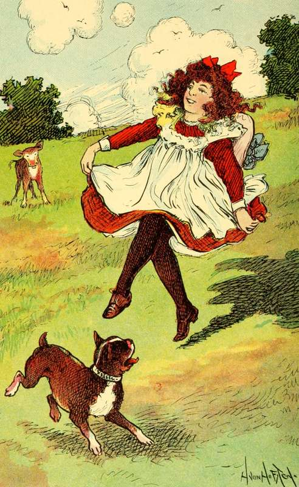
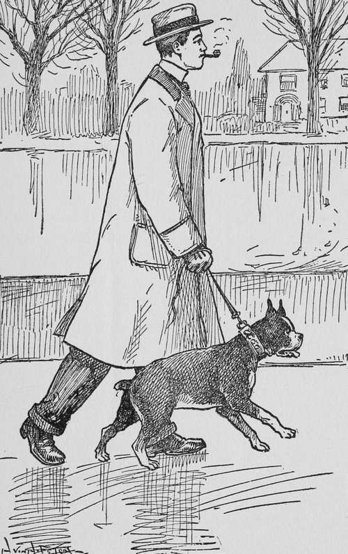

Chapter II. Pretty's First Home
Description
This section is from the book "Dogs And Puppies", by Frances Trego Montgomery.
Chapter II. Pretty's First Home
With drooping ears and tail she was handed to the maid in the brougham, and driven away before she had a chance to say good bye to her loving mother or her brothers and sisters.
"Here, look up and don't be so stupid," said the maid in French, which Pretty understood just as well as English, for dogs go by the sound of the voice and the manner of a person instead of by the words they say, to know what is wanted of them.
"She expects me to be lively and frisk around when my heart is breaking at being taken away from my mother".
Poor little girl-puppy! She was going to have a hard time at her new home.
Pretty was just eight weeks old; still she was expected to know as much, and more, than a year old child, and was boxed on the ears for doing things that were perfectly natural for any puppy to do. It is a dog's nature to chew, especially when she is cutting a lot of little pearly teeth, and how was she to know the difference between the leg of a kitchen chair that cost sixty cents and a carved mahogany that cost ninety dollars?
Then again, she was expected to play with things that were dragged on to the floor in front of her, and the people laughed when she hung on and shook her head like a full grown bull-dog, and would not let go even when lifted off her feet. Then why was she slapped and scolded when she jumped on her mistress' long trailing blue silk gown and tore the lace when it caught in her claws?
"Oh dear, what have I done now?" and she ran under the sofa to hide from the hard-hearted and harder handed French maid.
Her mistress only played with her for a few minutes at a time, when she fed her candy and other things that tasted good but always made her sick afterward. And just when she had cramps until she was most dead and was shiver ing with the cold, she would be picked up, slapped and put out of doors, until the poor little puppy thought that all there was in the world was cross French maids and slaps, with never a friendly dog to talk to from one week's end to another.
IF A DOG'S LIFE EVER FELL IN A PLEASANT PLACE, THIS LITTLE PUPPIE'S SURELY DID.
One day, however, a little boy came to visit the lady, and Pretty had the time of her life. My! such fun! Upstairs, downstairs, under tables, over chairs! And when finally, the little boy had gone, and Pretty, so hot and tired she could scarcely stand, was crawling away to a favorite nook in the hall, the French maid stumbled over her. My! such a temper! Poor Pretty was cuffed and thrown out of doors before she could think what had happened.
Dear little Pretty! The world seemed a hard one that night, with that cold wind making her huddle up under the porch. No wonder that the next day the French maid called her "one stupe-ed dog," and that on the next after that Pretty became very ill, so ill, in fact, that the lady had to telephone to the coachman's wife, who had raised her, to know what to do. The coachman's wife went to see the puppy, and when she saw how badly they had treated the poor little thing, and heard the French maid say she wished the dog would die, that she was tired of taking care of it, she laid the amount of money that had been paid for Pretty on the table and took her home.
Pretty was very glad indeed to find herself once more with her mother, and Gypsy was glad too, and petted her up just as any mother would her sick child.
Pretty told her of all the hard treatment she had received at the hands of the French maid, and ended up her tale by saying, "I only hope they will keep me here now. I know I shall die if they sell me again".
But wise old Gypsy shook her head.
"I heard the coachman's wife say that with good care you would soon be well, and that she would be more careful to whom you were sold next time. So cheer up".
SHE WAS SOLD TO A GENTLEMAN.
And sure enough, some weeks later, when Pretty was quite as strong as ever, she was sold to a gentleman who wanted a dog as a birthday gift for his son. This time Pretty was not so unwilling to go, because the gentleman spoke so kindly to her that she liked him from the start.
And his son was just as kind as he was, so that Pretty had a very happy home. She never forgot, though, her first home, and the memory of her unhappiness and trouble there made her all the more grateful for the kindness and love she was shown afterwards.
Continue to: